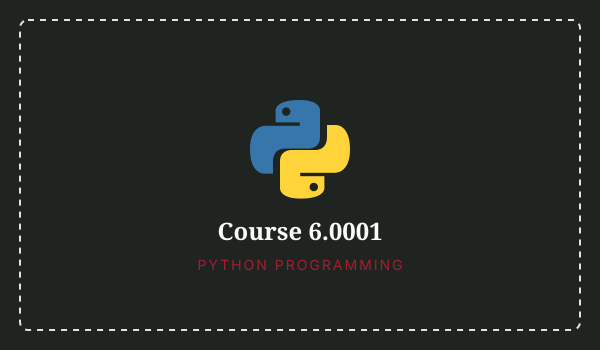
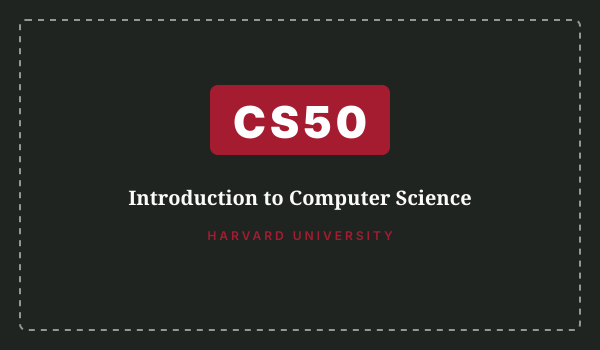
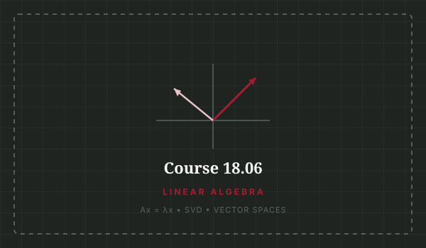
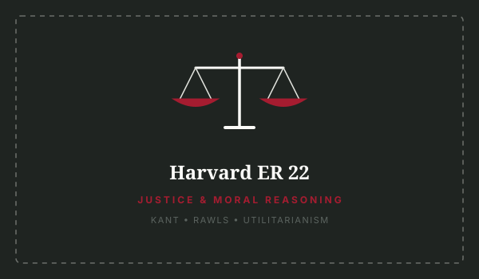
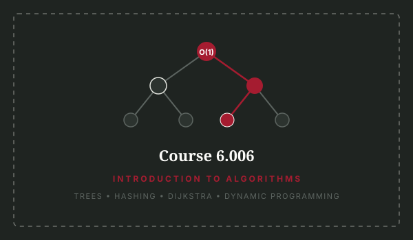
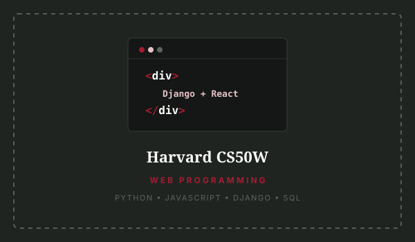
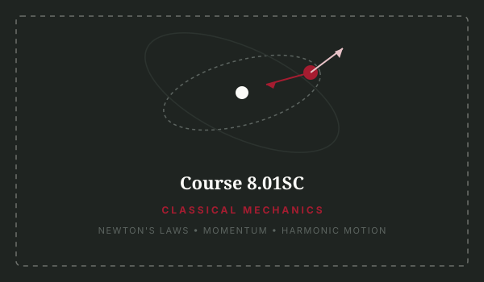
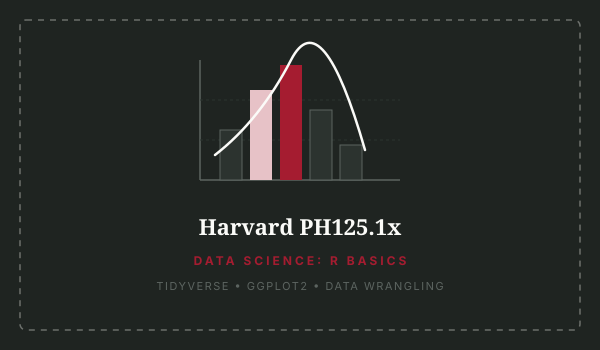

all curated MOOCs
8 featured offerings

MIT
Course 6.0001
Intro to Computer Science & Python
Prof. John Guttag • EECS
Designed for students with little to no programming background. Develops computational
problem-solving, algorithms, and structured testing in Python 3.
Course Syllabus
- Computation, Branching, and Iteration
- Functions, Decomposition, and Abstraction
- Testing, Debugging, and Exceptions
- Object-Oriented Programming (OOP)
- Algorithmic Complexity & Searching
- Introductory
- 9 Weeks
- Python 3

HARVARD
CS50x
CS50: Introduction to Computer Science
Prof. David J. Malan • SEAS
Harvard's flagship entry course teaching how to think algorithmically and solve problems
efficiently. Covers memory, data structures, Python, and SQL.
Course Syllabus
- Computational Thinking & Scratch
- C Syntax, Arrays, and Algorithms
- Pointers & Dynamic Memory Management
- Data Structures: Trees, Hash Tables, Tries
- Python, SQL, and Web Frameworks
- Introductory
- 12 Weeks
- C / Python / SQL

MIT
Course 18.06
Linear Algebra
Prof. Gilbert Strang • Mathematics
The legendary introduction to vector spaces, fundamental matrix subspaces, eigenvalues, and
singular value decomposition (SVD) essential for machine learning.
Course Syllabus
- Geometry of Linear Equations & Elimination
- Vector Spaces & The 4 Fundamental Subspaces
- Orthogonality and Gram-Schmidt Projections
- Eigenvalues, Eigenvectors, & Diagonalization
- Singular Value Decomposition (SVD)
- Intermediate
- 35 Lectures
- Applied Math

Harvard
ER 22
Justice: A Journey in Moral Reasoning
Prof. Michael J. Sandel • Philosophy
One of Harvard's most renowned lecture series examining classical and contemporary theories of
justice, moral dilemmas, utilitarianism, and equality.
Course Syllabus
- The Moral Side of Murder: Utilitarianism
- Putting a Price Tag on Life & Free Markets
- Immanuel Kant: The Categorical Imperative
- John Rawls: The Veil of Ignorance
- Aristotle: Telos and the Common Good
- All Levels
- 12 Lectures
- Moral Philosophy

MIT
Course 6.006
Introduction to Algorithms
Prof. Erik Demaine • EECS
Mathematical modeling and asymptotic analysis of algorithms: sorting, balanced search trees,
hash tables, shortest paths, and dynamic programming paradigms.
Course Syllabus
- Peak Finding & Asymptotic Notation
- Binary Search Trees & AVL Balancing
- Hashing & Cryptographic Collisions
- Graph Traversals: BFS, DFS, Dijkstra
- Dynamic Programming: Memoization & DAGs
- Intermediate
- 24 Lectures
- Algorithms

Harvard
CS50W
Web Programming with Python & JS
Brian Yu • Harvard SEAS
Dives into the design and implementation of modern web apps with Django, React, Git, CI/CD
pipelines, APIs, and scalable PostgreSQL database models.
Course Syllabus
- Git Version Control & Team Workflows
- Django: Models, Migrations, and Views
- Relational Modeling & PostgreSQL
- Modern JavaScript ES6+ & React SPAs
- CI/CD Pipelines, Testing, & Security
- Intermediate
- 12 Weeks
- Full Stack

MIT
Course 8.01SC
Classical Mechanics
Prof. Walter Lewin • Physics
Foundational Newtonian mechanics, fluid dynamics, oscillatory motion, and conservation laws
presented through intuitive demonstrations and physical problem sets.
Course Syllabus
- 1D & 3D Kinematics and Coordinate Systems
- Newton's Three Laws & Free-Body Analysis
- Work, Energy, & Conservation of Momentum
- Angular Momentum, Torque, & Rigid Rotations
- Harmonic Oscillations & Central Force Orbits
- Introductory
- 35 Lectures
- Physics

Harvard
PH125.1x
Data Science: R Basics
Prof. Rafael Irizarry • Biostatistics
First course in Harvard's Data Science Program. Covers R syntax, data wrangling with tidyverse,
reproducible visualization with ggplot2, and data frames.
Course Syllabus
- R Variables, Atomic Vectors, and Data Types
- Data Frames & Indexing Operations
- Tidyverse & Dplyr Data Transformations
- Visual Grammar Foundations with Ggplot2
- Vectorized Functions & Statistical Models
- Introductory
- 8 Weeks
- R / Tidyverse